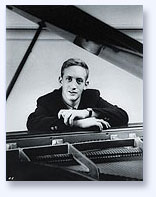
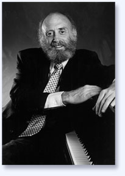

|
Lorin Hollander is a world-renowned
concert pianist with a continuously acclaimed 50-year
international career that began with a Carnegie Hall debut
at the age of 11. Hollander has appeared as guest soloist
with virtually every major symphony orchestra in the world
and is a veteran of over 2,500 piano performances: orchestral,
recital, lecture/recital, chamber music - as well as symphony
and choral conductor. He has been hailed in the press
as, "one of the truly electrifying personalities
of the concert stage,” “a musician of profound
insight,” and “one of the most fantastic talents
of our time.” |
| Lorin Hollander is offering concerts
as a solo recitalist, soloist with orchestra, orchestral
and choral conductor, master teacher, speaker, lecturer
and arts futurist. |
|
|
|
Lorin Hollander was an infant child prodigy who composed
music at age three and performed the Well-Tempered Clavier
of Bach at five. Mr. Hollander’s experiences of
the many stages of metamorphosis as the child prodigy
evolves to become a mature artist are fascinating material
for master
classes, explorations and symposia.
|
Contact Tom
Parker at Parker
Artists Managers & Consultants for concert performances
as solo recitalist, soloist with orchestra, orchestral and
choral conductor.
REPERTORY
|
|
BACH
Concerto in d, BWV 1052
Concerto in f, BWV 1056
BEETHOVEN
Chorale Fantasy
COPLAND
Piano Concerto
GERSHWIN
Concerto in F
Rhapsody in Blue
KHACHATURIAN
Piano Concerto
|
RAVEL
Concerto in G
RACHMANINOFF
Rhapsody on a Theme of Paganini,
Op. 43
SAINT-SAËNS
Piano Concerto #5 “Egyptian”
SCHULLER
Piano Concerto for Three
Hands*
|

Other concerti are available, which include works by Prokofiev,
Rachmaninoff and Tchaikovsky. Please also inquire
about recitals.
*Written for Lorin Hollander and
Leon Fleisher.
|